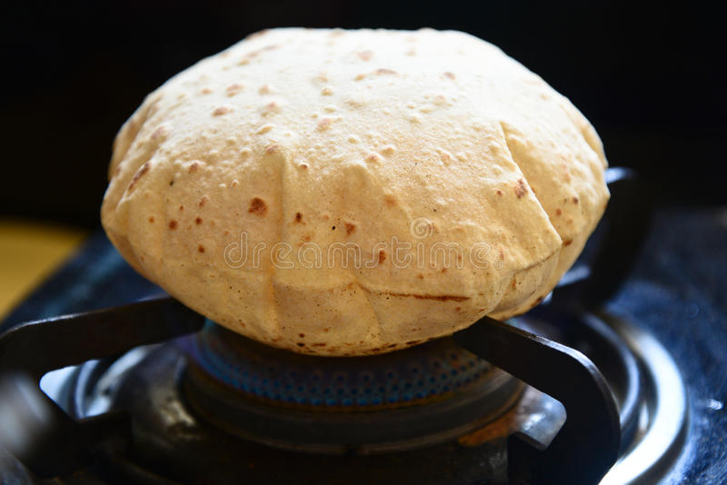

Roti

Description
The chapati is the staple flat bread of Northern India and Pakistan, also
known as a roti. It can be made from many types of grain, but is most
commonly made with finely ground whole wheat flour.
Ingredients
- Whole wheat flour
- Salt to taste
- Warm water as required
Steps
- Knead flour and water together.
- Cover for atleast 5 minutes.
- Divide into balls and roll out into disks.
- Place a non-oiled pan on a moderately high fire.
- When very hot, put a chapati on the pan and press it flat.
- Flip and repeat so it becomes lightly browned on both sides.
- Chapatis are often brushed with ghee (clarified butter) after being cooked.